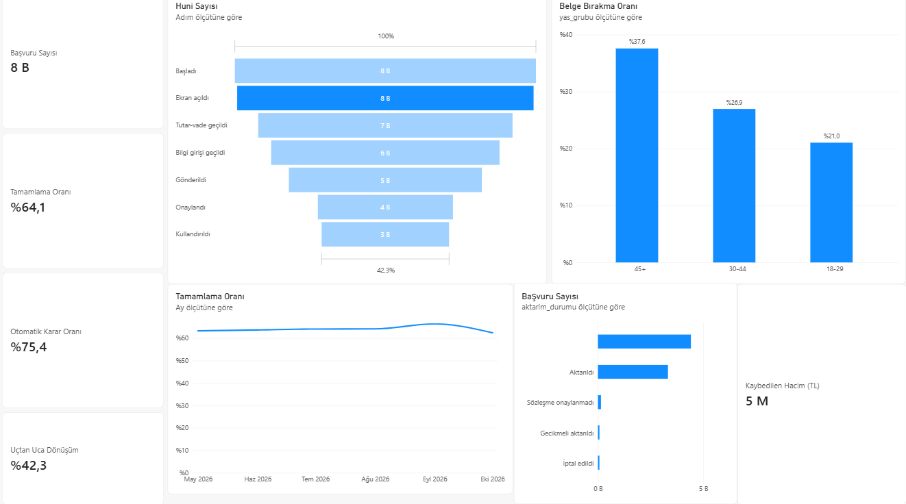
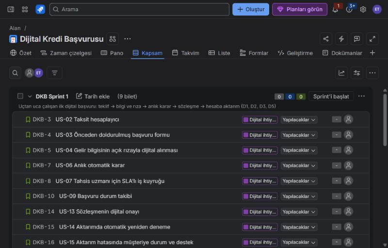
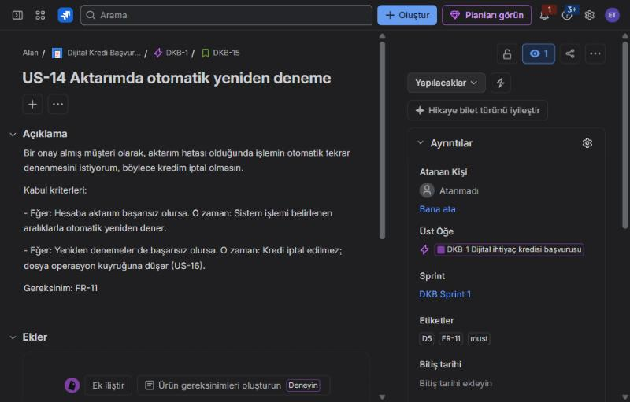

Mobil kredi başvurusunda müşteri onaydan sonra da kayboluyor
Bir bankanın mobil ihtiyaç kredisi sürecini araştırma, BPMN, SQL ve gereksinim analiziyle inceledim. Kaybın yarısı formda; ama şikayetlerin çoğu kredi onaylandıktan sonra para hesaba geçmediğinde geliyor.
Başvuru hunisi, iki kanal birlikte. Kurgusal “Örnek Banka”, Mayıs–Ekim 2026 dönemi için üretilmiş 8.000 sentetik başvuru.
Başlayan başvurudan kullandırılan krediye dönüşüm. Onay oranı tek başına bunu gizliyor: onaylanan kredilerin %3,6'sı iptal ediliyor ya da gecikiyor.
Gerçek banka verisi olmadan dört adımda
Bankaya ve çalışanlarına erişimim yoktu. Kullanıcı sorunlarını herkese açık şikayetlerden çıkardım, analizi bu bulgulara dayanan sentetik veriyle yaptım ve her varsayımı açıkça yazdım.
Şikayetler formda değil, kararda ve sonrasında
Başta sorunun form ve gelir belgesi adımında olduğunu varsaymıştım. Şikayetler bunu desteklemedi: en sık iki sorun, onaylanan kredinin hesaba geçmemesi ve reddin nedeninin açıklanmaması.
Formdan vazgeçen müşteri genelde şikayet yazmaz. Bu yüzden form kaybını ayrıca veriyle ölçtüm.
Şikayet sayısı. Kaynak: Şikayetvar 41, Google Play 3 kayıt, Kasım 2026. Temsil edici değildir; tekrar eden temaları gösterir.
Taslak süreç onayda bitiyordu; araştırmadan sonra iki adım ekledim
İlk As-Is şeması “Onay ya da red” kutusunda bitiyordu. Bulgulardan sonra sözleşme onayını ve kredinin hesaba aktarımını sürecin parçası olarak çizdim, darboğazları şikayet sayılarıyla işaretledim.
| Kod | Darboğaz | Süreçteki yeri | Şikayet |
|---|---|---|---|
| D5 | Onaylanan kredi hesaba geçmiyor | Sözleşme ve aktarım (yeni adım) | 12 |
| D6 | Red gerekçesi açıklanmıyor | Karar sonrası (yeni yol) | 9 |
| D3 | Manuel incelemede bekleme, durum bilgisi yok | Kredi tahsis | 4 |
| D1 | Bilgiler elle giriliyor | Başvuru formu | 1 |
| D2 | Gelir belgesi isteniyor | Başvuru formu | 1 |
| D4 | Eksik belge döngüsü | Manuel inceleme | 0 |
Veri, şikayetlerin göremediği kaybı gösteriyor
Başvuruların %36'sı gönderilmeden kayboluyor. Gelir belgesi istendiğinde 45 yaş üstünde bırakma %38'e çıkıyor. Manuel incelemeye düşen dosyalar ortalama 29 saat bekliyor; eksik belge çıkarsa 60 saat.
Onaylanıp iptal edilen 64 kredi 5,4 milyon TL'lik kaçırılmış hacim demek. Reddedilenlerin %28'i bir hafta içinde yeniden başvuruyor.
Veri sentetiktir; oranları araştırma bulgularına göre ben belirledim. Değerlendirilen şey, gerçek veride aynı soruları SQL ile sorabilmek.
| Gelir belgesi istendiğinde | Bırakma |
|---|---|
| 18-29 yaş | %21,0 |
| 30-44 yaş | %26,9 |
| 45 yaş ve üstü | %37,6 |
| Manuel inceleme | Ortalama süre |
|---|---|
| Eksik belge yok | 16,7 saat |
| Eksik belge var | 60,3 saat |

Her darboğaza bir çözüm, her çözüme bir gereksinim ve story
| Darboğaz | To-Be çözümü | Gereksinim | Story |
|---|---|---|---|
| D1 Elle form | Bilgiler banka kayıtlarından önceden dolu gelir | FR-03 | US-03 |
| D2 Gelir belgesi | Gelir bilgisi açık rızayla dijital alınır; belge yalnızca yedek | FR-04, FR-05 | US-04, US-05 |
| D3 Bekleme | SLA'lı iş kuyruğu (hedef 4 iş saati), durum takibi ve bildirim | FR-06–08 | US-06–10 |
| D4 Eksik belge | Belge uygulama içinden istenir ve yüklenir | FR-09 | US-11 |
| D5 Aktarım | Otomatik yeniden deneme, müşteriye durum ve destek, ekibe bildirim | FR-11 | US-14–16 |
| D6 Gerekçesiz red | Genel red nedeni ve önerilen tekrar başvuru süresi | FR-12 | US-17, US-18 |
| Uyuşmayan limit | Ön onaylı limit karar motoruyla eşleştirilir | FR-01, FR-13 | US-01, US-19 |
20 story MoSCoW ile önceliklendirildi: 11 Must, 6 Should, 3 Could. Sprint 1'e uçtan uca çalışan ilk başvuruyu oluşturan 9 story alındı; en sık şikayet edilen aktarım sorunu (D5) bu sprintte.


Başarı altı KPI ile ölçülecek
| KPI | As-Is | Hedef |
|---|---|---|
| Başvuru tamamlama oranı (mobil) | %64,0 | %75 |
| Otomatik karar oranı | %75,4 | %85 |
| Manuel incelemede ortalama süre | 29,1 saat | 4 iş saati |
| Onaylanıp kullandırılamayan ya da geciken kredi | %3,6 | %1'in altı |
| Başlayan başvurudan kullandırılan krediye | %42,7 | %52 |
| Red sonrası 7 gün içinde tekrar başvuru | %28,4 | %15 |
As-Is değerleri mobil kanal, sentetik veri. Hedefler varsayımsaldır.